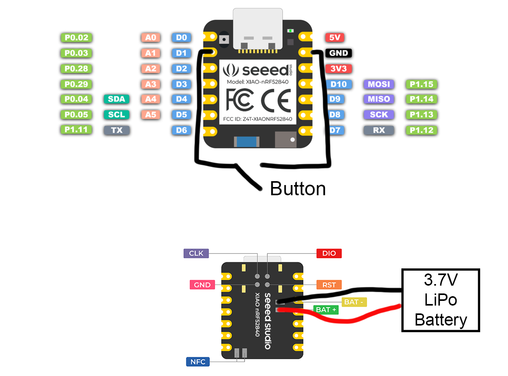
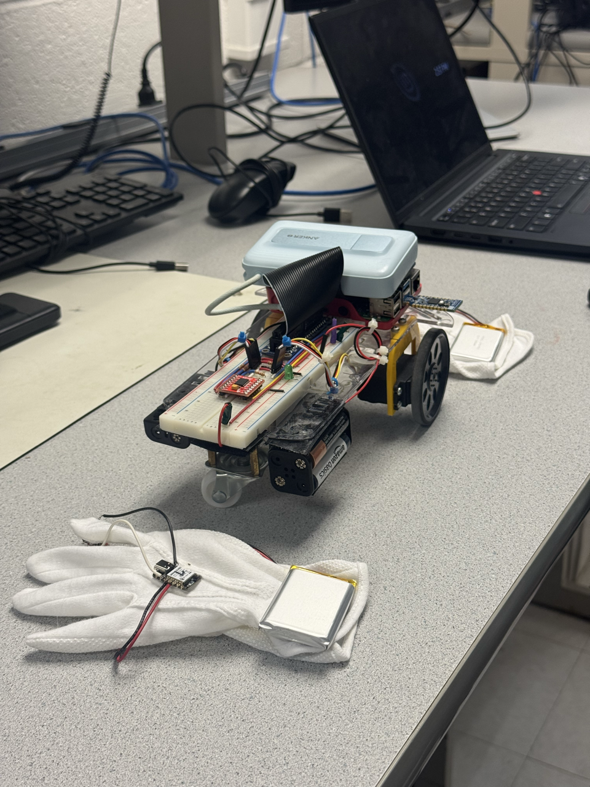
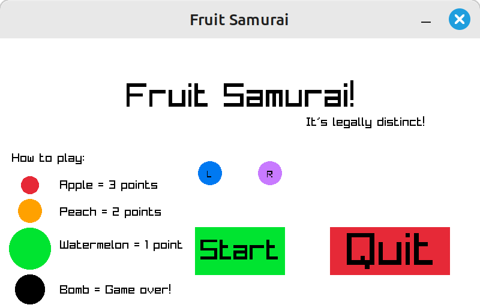
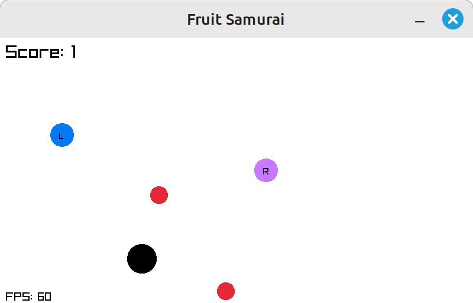

Dual-Mode Gesture Control:
A Unified Interface for Robot and Game Interaction
ECE5725 Final Project
Team Members
- Robbie Leslie (rwl228)
- Shiqi Liu (sl3646)
Advisor
Dr. Danna Ma
Submission Date
December 12, 2025
Introduction
In ECE5725, we explored many ways to use the Raspberry Pi for hardware-software integration, but our interactions with the system remained limited. Most operations relied on keyboards, mice, or prewritten scripts, offering little in terms of intuitive, real-time control.
In everyday life, our hands are the primary tools for interacting with the physical world—whether driving, eating, gaming, or performing fine-grained tasks. Motivated by this observation, we set out to design a more natural and expressive interface for the Raspberry Pi. Our project introduces a dual-mode unified gesture-control system that allows users to control different applications simply by wearing a sensor-enabled glove.
We wanted to make sure that both of our modes would demonstrate the strengths of embedded systems. This meant having both a strong graphical component to show the power of the Linux desktop, as well as a hardware component. We decided to build a game and a robot that would utilize our gloves as the control method.
Project Objective (Will make a new fig)
- Build a reliable wireless communication channel between the gesture glove and the Raspberry Pi.
- Stabilize IMU motion data through real-time filtering so the glove behaves more like a controller and less like a jittery sensor.
- Map hand gestures to continuous motor commands for smooth and intuitive robot navigation.
- Use the IMU accelerometer to control two cursors in a video game built with C and Raylib.
Project Video
Demonstration clip highlighting the system in action.
Key Design Milestones
1 Milestone 1 — IMU ↔ Dongle Communication
The first major checkpoint was establishing a reliable data path between the IMU and our wireless dongle. We powered the microcontroller with the IMU over USB-C and connected the dongle to a laptop for rapid debugging. Once we had confirmed that the microcontroller and dongle were communicating correctly, we had to then have the dongle talk to the Pi. This was done using Serial, and we build readers in both C any Python since we used both languages.
There were multiple ways that we could have had a microcontroller communicate with the Pi. Two of the most popular are WiFi and Bluetooth. If we chose WiFi, we would have had a microcontroller connect to a network, and then used UDP to steam data packets from the microcontroller to the Pi. This would have been fast enough, and is well documented. However, it would require conencting the microcontroller to a network, and university managed networks are notorious for having limitations which make it difficult to communicate.
Bluetooth is a widely used low-power 2.4GHz communication protocol used to stream data. It would have met most of our design requirments, except it can have higher latancy. But the main reason that we choose not to use Bluetooth is ease of development. The Bluetooth protocol is a bit messy, which makes it hard to devleop for. It is well documented, but still can be fiddly.
To solve both the latency problem, and the ease of development, we looked into using direct 2.4GHz communication with a dongle. This technique is often used with wireless gaming mice. During our research, we found out about Nordic Semiconductor's Enhanced ShockBurst (ESB). This protocol is used for low latency 2.4GHz communication between one recievcer and up to eight transmitters. It is enabled on the nRF52 series of microcontrollers.
And what sealed the deal was the XIAO nRF52840 Sense board with an integrated LSM6DSO 6-axis IMU. Having the IMU built into the microcontroller development board would save us from having two different PCBs attached to the gloves. It also has a built in battery charge circuit, so we would just need to connect a battery and it would be able to charge it over USB-C through the micrcontroller board. Then to connect to the Pi, we could get the nRF52840 Dongle, which is designed for applications like being a reciever over USB. Using this combiation also meant that we got to try using Zephyr, a popular Real-Time Operating System for microcontrollers.
Once the microcontroller to Pi communication was complete, Shiqi and Robbie split their development tracks. Shiqi owned the Python-based motor interface, while Robbie moved to the C/Raylib environment required for the slicing game.
2 Milestone 2 — Motor-Control Development
IMU filtering. Initial experiments used a simple complementary filter to fuse accelerometer and gyroscope readings. While this approach worked for coarse motion, it quickly revealed its limitations during steering: the heading estimate accumulated drift, reacted slowly to quick maneuvers, and lacked the precision needed for smooth gesture control. Since the timeline allowed for further refinement, Shiqi transitioned to a Mahony-based filter. This algorithm provided a more mathematically grounded orientation estimate by incorporating gyroscope feedback and corrective proportional-integral terms. After tuning the filter gains for our specific IMU, the system produced stable, low-noise roll and pitch estimates suitable for continuous real-time control. The improvement was immediately noticeable—tilts felt more responsive, and the robot no longer “wandered off” due to accumulated drift.
Gesture-to-motor mapping. Once reliable orientation estimates were available, Shiqi began designing the mapping from hand gestures to motor behavior. This required assembling the robot chassis, validating the servo power path, and ensuring the Raspberry Pi could generate stable PWM signals. Early mapping attempts used the Lab 3 DC motor system, but the torque was insufficient for smooth directional changes. To improve performance, the team replaced the drivetrain with a Parallax Feedback 360° high-speed servo. The servo offered higher stall torque, consistent rotation speed, and closed-loop position feedback—traits that made real-time gesture-driven control significantly more predictable.
With the mechanical system stabilized, the next step involved translating tilt angles into forward and turning commands. Shiqi iterated through several proportional gains and deadband thresholds to prevent jitter while preserving responsiveness. Testing sessions involved holding the glove at various angles, observing wheel response, and adjusting scaling factors until the robot exhibited smooth, intuitive motion that matched hand gestures naturally. The result was a control pipeline that felt direct and continuous: mild tilts produced gentle course corrections, while larger motions triggered sharper turns or acceleration.
3 Milestone 3 — Game Development
Game Template. To start off developemnt, Robbie chose to use Raylib with C. For the class, we have learned PyGame with Python. Robbie chose to use Raylib and C for a few reasons. The first is a personal preference for C over Python. The second is that he has a bit of experience in Raylib from building a game for a game jam with Raylib and Odin. But the third and most important reason is performance. Python is an interpreted language, which means that is very slow compared to a compiled language like C. Real game developers mostly use C++ to avoid the overhead that comes from inperpreted languages. C was chosen over C++ mostly because of familiarity. To get started, Raylib has an offical C template which contains example code for how to have different screens, and set up a Raylib project.
Control Implementation. With the template in place, the next task was to get the cursors working. This meant reading the IMU data from the dongle, and using it to change the position of the cursor. In order to do that, Robbie developed the algorithm to try and convert the acceleration data into position via double integration. To get proper measurements, the IMUs are calibrated to try and remove any bias they have. Then, we try to filter out gravity so the acceleration is only from movement, this is partially done using a high-pass filter. A deadzone is also applied to get rid of very small movements. Next, the acceleration is integrated to get the velocity. The velocity is damped, clamped, and another deadzone is applied before it is finally integrated to get the position. The results were inconsistent, but good enough to move on to the next parts of development.
Gameplay. With cursors working, it was finally time to add the fruits to the game. Three fruits were added with various sizes, as well as a bomb. The smaller the fruit, the higher the points that were scored for slicing it. Touching a bomb would cause a game over. In order to make testing easier, a debug mode was added where the mouse would act like the left cursor instead of IMU data. With the basic gameplay in place, all that was left was to polish the game by adding buttons, a start and end screen, and the abiltiy to replay the game. A local high score system was also added which keeps track of the best score since the game has been launched. This local high score is only stored in the game, so closing the game resets the high score. We planned on adding a global high score by saving the scores in a file, however this was cut due to time constraints.
Results
Our system performed reliably during demonstration and met the expectations for both gesture-based robot control and game interaction.
For the motor-control subsystem, the robot responded accurately to hand tilts, enabling fine-grained directional control and smooth trajectory adjustments. The Mahony filter provided stable orientation estimates suitable for real-time operation, although its convergence time became noticeable during large, sudden orientation changes. These limitations were primarily due to the sensor precision of our IMU and the inherent lag in the filter’s feedback structure. Despite this, the robot achieved consistent responsiveness across trials, proving that our mapping strategy and proportional control logic were effective.
For the game interaction component, the system successfully translated IMU motion into on-screen cursor movement. However, cursor precision remained limited due to noise from the accelerometer and the difficulty of reconstructing accurate Cartesian positions from orientation alone. While the gameplay remained functional and enjoyable, this highlighted opportunities for algorithmic improvements and potential hardware upgrades.
Conclusions
Our final results were able to mostly meet our original design goals. We successfully demonstrated two distinct interaction modes—robot control and game control—using low-latency 2.4 GHz communication between the gloves and the Raspberry Pi. The system proved that a gesture-based interface can serve as a unified control method for both hardware and software applications.
Through development, we also gained a deeper understanding of the limitations of 6-axis IMUs. Both the motor-control and cursor-control pipelines would have benefited from a 9-axis sensor, which would provide an additional reference vector for more robust orientation reconstruction. While such an upgrade introduces higher cost and more complex filtering requirements, the performance improvements would be significant—particularly for reducing drift and improving responsiveness.
Overall, our prototype validated the feasibility of a dual-mode gesture interface and highlighted clear paths for future refinement in sensor hardware, filtering algorithms, and user-experience robustness.
Future Work
There are several promising directions to extend and improve the current system:
Upgrade the IMU hardware. Our prototype relies on a 6-axis IMU, which constrains orientation reconstruction and cursor precision. Moving to a 9-axis device would provide an additional reference vector, reducing drift and boosting responsiveness for both robot control and game interaction.
Reduce control latency in the motor pipeline. Although the robot responds smoothly, large and rapid hand motions still reveal measurable delay between IMU updates and wheel commands. Streamlining the filtering stack or optimizing the Raspberry Pi control loop could unlock more aggressive tuning and faster driving dynamics.
Improve cursor control in the game mode. With only a 6-axis IMU, reconstructing absolute cursor positions remains noisy. Future revisions could leverage more advanced estimators or higher-grade IMUs to deliver smoother, more precise on-screen motion and a more natural gameplay feel.
Add flex-sensor inputs. The original concept included flex sensors to capture finger gestures. Integrating them would expand the input vocabulary—enabling mode switching, braking, or in-game actions—and make the glove a more versatile controller.
Figures, Drawings, and Supporting Media
Figure 1. Glove Wiring Schematic
Simplified diagram showing the LiPo supply, button with internal pull-up, and the IMU breakout. We reinforced the JST joints with hot glue to keep the connections reliable during demos.
Figure 2. Glove Electronics Layout

Each XIAO nRF52840 is mounted on the back of the glove and backed by a Velcro-mounted battery so packs can be swapped quickly without tools.
Figure 3. Button Placement

The trigger button is positioned for an easy thumb press. Swappable JST connectors let us disconnect the pack entirely for charging or transport.
Figure 4. Robot Top View

Top-down look at the Pi, motor driver, and wiring harness routing. Servos sit farther back to balance the battery weight.
Figure 5. Robot Side View
Side look at the Pi, motor driver, and wiring harness routing.
Figure . Fruit Samurai Title Screen
Players start rounds by hovering a cursor over “Start.” The L and R dots correspond to the left and right gloves, so orientation feedback is immediate.
Figure 7. Fruit Samurai Gameplay
Live gameplay capture showing simultaneous left/right cursors slicing fruit. Pressing either glove button re-centers both cursors if they drift off-screen.
Team Contributions
Each teammate owned a subset of the hardware, firmware, and documentation tasks, and we met daily to integrate and review progress.
Project group picture

Robbie Leslie
rwl228@cornell.edu
Game and Microcontroller Developer
Shiqi Liu
sl3646@cornell.edu
Robot Control and IMU System Developer
Parts List
- Raspberry Pi Model 4B with 2GB RAM - $45.00 (included in lab materials)
- 2x Seeed Studio XIAO nRF52840 Plus - $31.98
- nRF52840 Dongle - $10.00
- 2x 3.7V 1200mAh LiPo Battery - $19.90 (found in lab)
- 2x Parallax Feedback 360° High Speed Servo - $55.98 (found in lab)
- 2x Buttons - Found in Robbie's spare parts drawer
Total with Pi: $162.86
Total without Pi: $117.86 (with $75.88 provided by lab)
References
Tower Pro Servo DatasheetBootstrap
Pigpio Library
R-Pi GPIO Document
Raylib
Raylib Cheatsheet
Raylib C Template
Seeed Studio XIAO nRF52840 Wiki
nRF Enhanced ShockBurst Documentation
nRF Samples
nRF ESB Samples
Zephyr LSM6DSO Example
Parallax Feedback 360° High Speed Servo Datasheet
Code Appendix
Full source code available on GitHub: https://github.com/leslier7/ECE5725-Final-Project/tree/main
Key Files and Directories
- microcontroller/ - Firmware for both the glove microcontroller and dongle, as well as old demos.
- microcontroller/imu_tx - Firmware for the glove microcontroller. The left and right glove is set with a compiler flag.
- microcontroller/dongle_rx - Firmware for the dongle.
- pi/ - Top level for all the software which runs on the Pi
- pi/c-game/ - Raylib C implementation of Fruit Samurai game
- pi/TODO/ - TODO motor control file path
- website/ - This documentation website